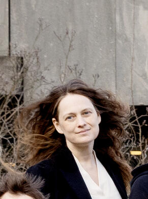

ITU-homepage for Eva Rotenberg, professor, Theoretical Computer Science, IT University of Copenhagen

Publications:
See Google
Scholar
or dblp
Contact: erot at itu dot dk
About my research:
Current and previous students and postdocs
Invited talks, selected:
Programme committee
work:
- 2024: STOC,
ICALP
- 2022: SOSA,
STOC, ESA track S
- 2021: SODA, SoCG, ACDA
- 2020: STACS
, HALG, FUN
- 2019: CPM
, ICALP track A
, ESA track
A,
Other functions in conference organisation:
- Dagstuhl Seminar organiser:
24471,
25191.
- Icalp
Steering Committee.
- ESA
Steering Committee 2020 to 2024
- LIPIcs
Editorial Board
- EATCS Council member
- ARCO meeting 2021 and 2024, organiser
- Halg 2019 as
anti-harassment contact person (safeTOC),
- CPM 2020 as
local organiser.